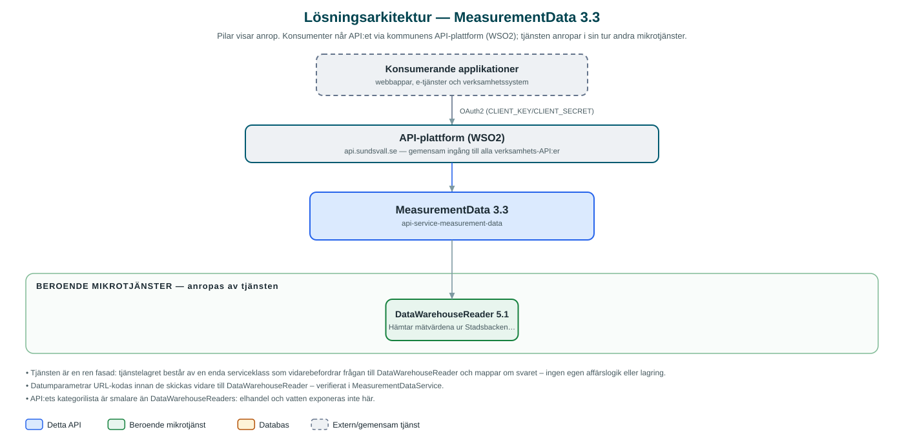

MeasurementData
Hämtar förbrukningsmätvärden – fjärrvärme, fjärrkyla, el, bredband och avfall – per kund och anläggning ur Stadsbackens datalager.
Om API:et
MeasurementData ger kommunens applikationer ett fokuserat gränssnitt för förbrukningsdata från de kommunala bolagen. Applikationer som visar energiförbrukning för invånare och företag – till exempel kundportaler – anropar detta API i stället för att själva hantera datalagrets bredare gränssnitt.
Anroparen anger kund (partyId), en eller flera anläggningar, kategori (fjärrkyla, fjärrvärme, el, bredband eller avfall), tidsintervall och önskad upplösning – kvart, timme, dygn eller månad. Tjänsten hämtar mätvärdena från DataWarehouseReader och paketerar dem som mätserier med mätpunkter och metadata.
Tjänsten är en tunn fasad utan egen lagring: all data kommer ur Stadsbackenkoncernens datalager via DataWarehouseReader, och kundens identitet hanteras hela vägen som partyId i stället för person- eller organisationsnummer.
Det här gör API:et
- Mätvärden per kund och anläggning – Förbrukningsdata hämtas för en kund (partyId) och en eller flera anläggningar inom ett angivet tidsintervall.
- Flera nyttigheter – Stödjer kategorierna fjärrkyla, fjärrvärme, el, bredband och avfall.
- Valbar tidsupplösning – Mätvärden aggregeras per kvart, timme, dygn eller månad enligt anroparens val.
- Strukturerade mätserier – Svaret levereras som mätserier med mätpunkter och metadata, anpassat för presentation i diagram.
API-dokumentation
API:ets samtliga resurser, parametrar och datamodeller finns beskrivna i en OpenAPI-specifikation som är hämtad ur källkodsförrådet. Den kan utforskas interaktivt i Swagger UI eller laddas ner som YAML. Programvaruförteckningen (SBOM) listar tjänstens samtliga tredjepartskomponenter med version och licens.
Teknisk dokumentation
Nedan beskrivs hur tjänsten är uppbyggd, vilka andra tjänster den anropar och vad som krävs för att driftsätta den. Informationen är härledd ur källkoden och dess konfiguration på GitHub.
Arkitektur

API:et är en mikrotjänst (Java 25, Spring Boot via kommunens gemensamma tjänsteplattform dept44 (8.0.8), byggd med Maven). Konsumenter når tjänsten via kommunens gemensamma API-plattform (WSO2) på api.sundsvall.se – tjänsten anropas aldrig direkt. Tjänsten anropar i sin tur andra mikrotjänster i kommunens tjänstelandskap.
Teknikstack
- Språk: Java 25
- Ramverk: Spring Boot via kommunens gemensamma tjänsteplattform dept44 (8.0.8), byggd med Maven
- Övrigt: Feign-klient med Resilience4j circuit breaker mot DataWarehouseReader
Beroenden till andra mikrotjänster
Tjänsten anropar följande mikrotjänster. Versionerna är hämtade ur källkodens integrationsklienter.
| Tjänst | Version | Användning |
|---|---|---|
| DataWarehouseReader | 5.1 | Hämtar mätvärdena ur Stadsbackenkoncernens datalager; enda datakällan. |
Programvaruförteckning
Tjänsten bygger på 221 tredjepartskomponenter fördelade på 11 olika licenser. Till skillnad från tabellen ovan, som listar andra mikrotjänster, avses här de programbibliotek som ingår i bygget. Se programvaruförteckningen för hela listan.
Konfiguration och driftsättning
- URL och OAuth2-klientuppgifter (client credentials) för DataWarehouseReader-integrationen
- Anslutnings- och lästimeout för integrationen konfigureras per miljö
- Ingen databas – tjänsten lagrar ingenting själv
- Anrop görs per kommun – municipalityId ingår i API-vägarna
Noterbart ur källkoden
- Tjänsten är en ren fasad: tjänstelagret består av en enda serviceklass som vidarebefordrar frågan till DataWarehouseReader och mappar om svaret – ingen egen affärslogik eller lagring.
- Datumparametrar URL-kodas innan de skickas vidare till DataWarehouseReader – verifierat i MeasurementDataService.
- API:ets kategorilista är smalare än DataWarehouseReaders: elhandel och vatten exponeras inte här.
- Kundidentiteten hanteras som partyId hela vägen; person- eller organisationsnummer förekommer inte i API:et.
Källkod
Källkoden är öppen och finns hos Sundsvalls kommun på GitHub. I källkodsförrådet finns även instruktioner för att klona, konfigurera och starta tjänsten i egen miljö.